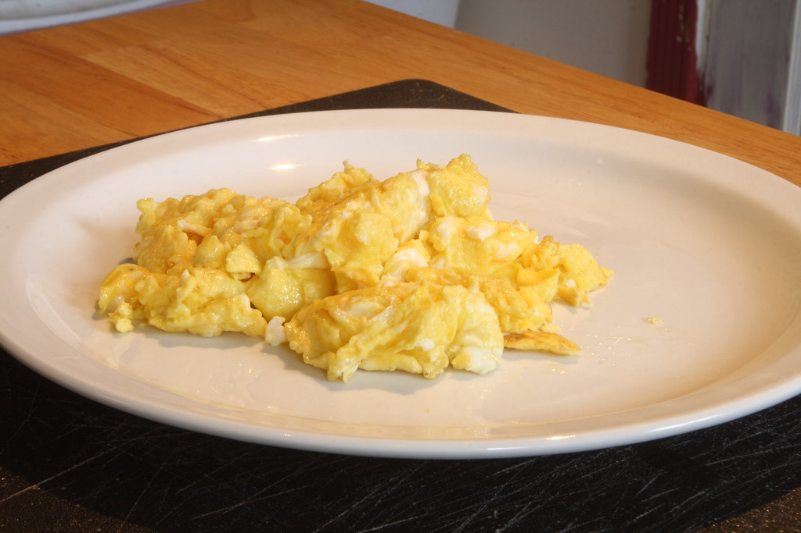

Scrambled Eggs

Description
This best scrambled egg recipe took a bit of tweaking, but I've finally made the best scrambled eggs ever! My friends and family love it. I make it almost once a week before school.
Ingredients
- 2 large eggs
- 2 thin slices cooked ham, diced (Optional)
- 2 tablespoons sliced Cheddar cheese
- 1 teaspoon heavy whipping cream
- 1/2 teaspoon butter
Steps
- Gather all ingredients.
- Whisk eggs in a small bowl until smooth. Mix in ham, Cheddar cheese, and heavy cream.
- Melt butter in a skillet over medium heat. Pour in egg mixture; cook and stir until set but still moist, 3 to 5 minutes.
Home